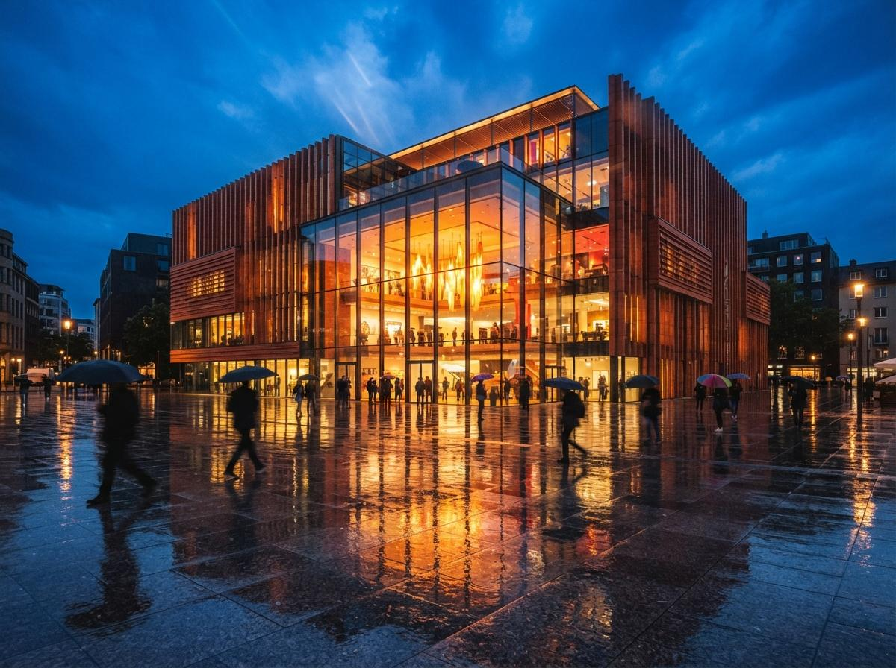
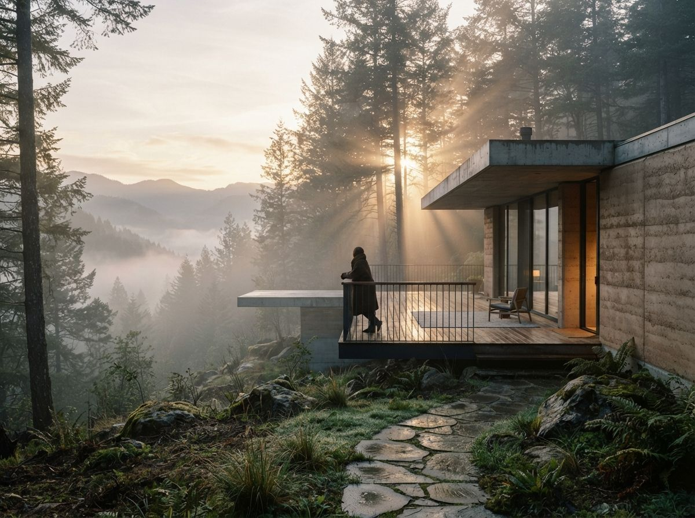

The list, published June 11 and surfacing in this week's search results for nearly every rendering query we track, runs: Gendo, Veras, D5 Render, Lumion, mnml.ai, PromeAI, Midjourney, LookX, Visoid, and xFigura. That is a defensible set of names. It is also a list where the publisher takes the podium, which means it earns the same treatment we gave the Chaos comparison: assume nothing is false, and ask instead who set the rules.
What checks out
Credit first, because there is real credit due. The factual layer of this list is in better shape than most independent listicles we have audited. The pricing is current and honest: Gendo's Studio plan at £66 a month billed annually, Veras at roughly $30 to $60 per named user, D5 Pro around $38 a month, PromeAI's Standard plan near $29, Midjourney from $10. Nobody buries a price behind "contact sales" that we could find published elsewhere.
More surprising: the cons column on Gendo's own entry is genuinely useful. The article concedes that Gendo is not a modelling or drafting tool, that it works best from an existing base image rather than a blank page, and that it cannot produce dimension-accurate construction documentation. That is three more honest limitations than most vendors print about themselves, and each one matches what we found in our own first look at Gendo's design canvas. The knocks on competitors are fair too. D5 really is Windows-only and hardware-hungry. Midjourney really does hallucinate structure and really should be treated as a reference generator, not a design representation. Veras really is the deepest BIM integration in the field. When a growth marketer writes "our competitor has excellent geometry and material override controls," you can at least trust the facts survived the marketing pass.

The criteria picked the winner
Here is where the audit turns. The article's stated evaluation factors include workflow alignment, collaboration needs, BIM integration, and hardware constraints. Reasonable list. Now notice what happens when you weight them differently.
If BIM integration leads, Veras wins. It ships native plugins for Revit, SketchUp, Rhino, Archicad, Vectorworks, and Forma, and this list itself calls that integration the deepest available. If output quality per dollar leads, D5 or Lumion wins. If price leads, mnml or Visoid wins. The only weighting under which a browser-based, CAD-agnostic canvas that accepts PNG uploads takes first place is one where real-time collaboration and zero-install access sit at the top of the stack. Those happen to be Gendo's two differentiators. The ranking is not dishonest. It is downstream of a criteria sheet that was written in the same building as the product roadmap.
Nothing in the list is false. The verdict was just written before the trial.
This is the identical structure to the Chaos comparison from last week, where Veras "won" a lineup that excluded every tool with a BIM plugin. The vendor listicle has become a genre with fixed rules: real facts, real prices, honest-sounding cons, and a rubric reverse-engineered from the author's paycheck. We wrote about how to read the listicle flood as a category; this entry is the cleanest specimen yet, because it is so close to being a good document.
The guest list
The second lever, as always, is who gets invited. Enscape is missing, despite being the renderer an enormous share of firms already own, and despite Veras now shipping inside Enscape subscriptions, a fact this list itself mentions. Twinmotion is missing. SketchUp Diffusion, the free native option sitting inside the most-used modeler in small practice, is missing. So is the entire question of what your BIM platform already gives you before you spend a pound.
Their places are filled by LookX, Visoid, and xFigura at ranks eight through ten. All three are real tools, and we have tested xFigura ourselves, but their function here is arithmetic: they make ten. A nine-item list reads as an essay; a ten-item list reads as research. None of the three threatens Gendo's positioning, because none of them is the incumbent a reader would actually weigh Gendo against. The tools that would force that comparison, the ones already installed on the reader's machine, did not make the cut.

How to actually use this list
Strip the ranks and the list becomes worth your time. Read every cons column and trust it, because vendor legal teams check the negative claims about competitors harder than anything else on the page. Treat the pricing table as accurate as of June. Note that the author byline is disclosed, Head of Growth, in plain text, which is more than some publications manage, and then do the reweighting yourself: put your own workflow first, your file formats second, your seat count third, and re-rank the ten against that. We keep a buyer's framework for exactly this exercise, and Gendo's own data slots into it fine. Under a Revit-first weighting, the list's own facts put Veras on top. Under a solo-practitioner budget weighting, they put mnml or Visoid there. That is the tell that the document is a brochure with a very good appendix.
Our take
The vendor top-10 is not going away, because it works: it ranks for the exact queries architects type, it reads as neutral, and it costs a growth team a week. The correct response is not outrage, it is literacy. Gendo has built a genuinely interesting product and then wrapped it in the genre's standard costume, and the costume is the least interesting thing about it. A collaborative canvas with honest limits, priced flat, no install: that case could stand on its own without borrowing the authority of a leaderboard.
Ten tools, one author, one employer, one winner. You already knew the score before kickoff. Read it anyway, just sit in the away stand.
Written from the July 10, 2026 intel sweep: Gendo's "Top 10 AI Rendering Software for Architects in 2026" (gendo.ai/blog, published June 11, byline Joe Sherman, Head of Growth). Claims and pricing verified against the published article and prior ArchiGen AI testing. No affiliate relationship with any tool named.